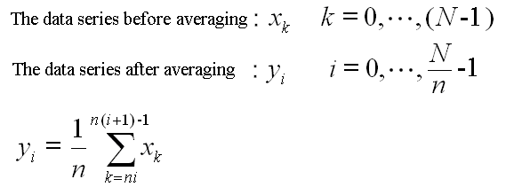
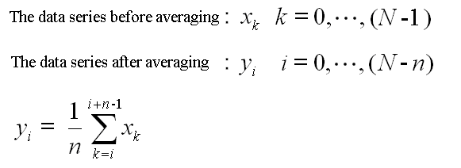

9. Averaging
Analog data can be averaged by using the AdDataConv function. The following methods are supported:
- Simple averaging
- Shifted averaging
|
<------------------------------------- N ------------------------------------> <--------------- n -------------->
Raw Data Data Data Data
. . .
Data Data Data |
\/|
\/|
\/Averaged Data Data
Data
After averaging n raw data by this method, the effective sampling rate and the number of effective data averaged are reduced to 1/n of their originals. Assume that the number of raw data is N, the number of effective data will be N/n after the averaging. When N is not divisible by n, the remainder is used for averaging. When you use the AdDataConv function, specify AD_CONV_AVERAGE1 for uEffect and n for uCount, respectively. For the numerical formulas, please refer to the followings. 
|
<------------------------------- N -------------------------------> <-------------- n ---------------->
Raw Data Data Data Data Data Data Data |
\/|
\/|
\/|
\/|
\/Averaged Data Data Data Data Data
Assume that the number of raw data is N. After averaging n raw data, the number of effective data averaged is (N - n + 1). The sampling rate is not changed. When you use the AdDataConv function, specify AD_CONV_AVERAGE2 for uEffect and n for uCount, respectively. For the numerical formulas, please refer to the followings. 
© 2000, 2013 Interface Corporation. All rights reserved.
[Top]